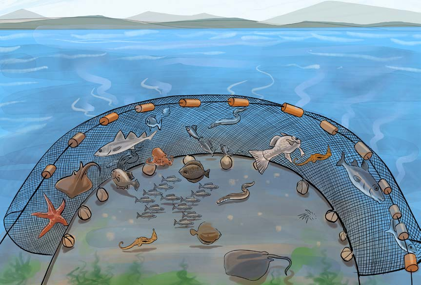

kutumia kokoro ni mojawapo ya njia zisizo bora za uvuvi kwani huvua samaki wakubwa na wadogo, mayai, na viumbe wengine wasiokusudiwa kuvuliwa. Kielelezo namba 11 kinaonesha wavu aina ya kokoro ukitumika katika kuvua samaki.

Njia za kudhibiti uvuvi haramu
Uvuvi usio bora huitwa uvuvi haramu. Madhara yanayotokana na uvuvi haramu yanaweza kudhibitiwa kwa kuelimisha wavuvi kuhusu madhara ya kutumia baruti, sumu na kokoro. Vilevile, sheria za kuzuia uvuvi haramu zisimamiwe vizuri ili kuboresha shughuli za uvuvi. Aidha, wavuvi wajengewe uwezo wa kununua na kutumia vifaa bora vya uvuvi, kama vile nyavu zenye ukubwa wa inchi mbili na nusu na kuendelea.